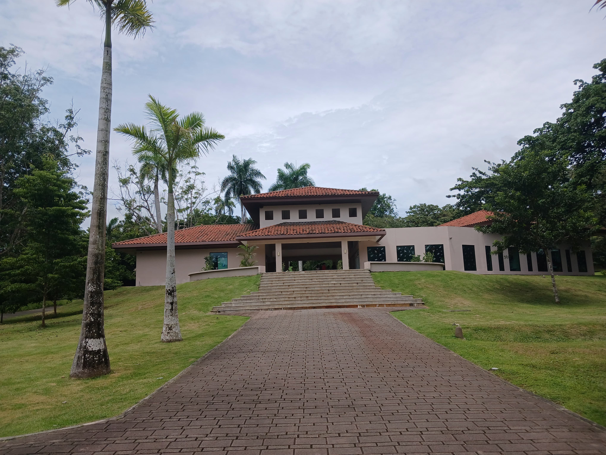
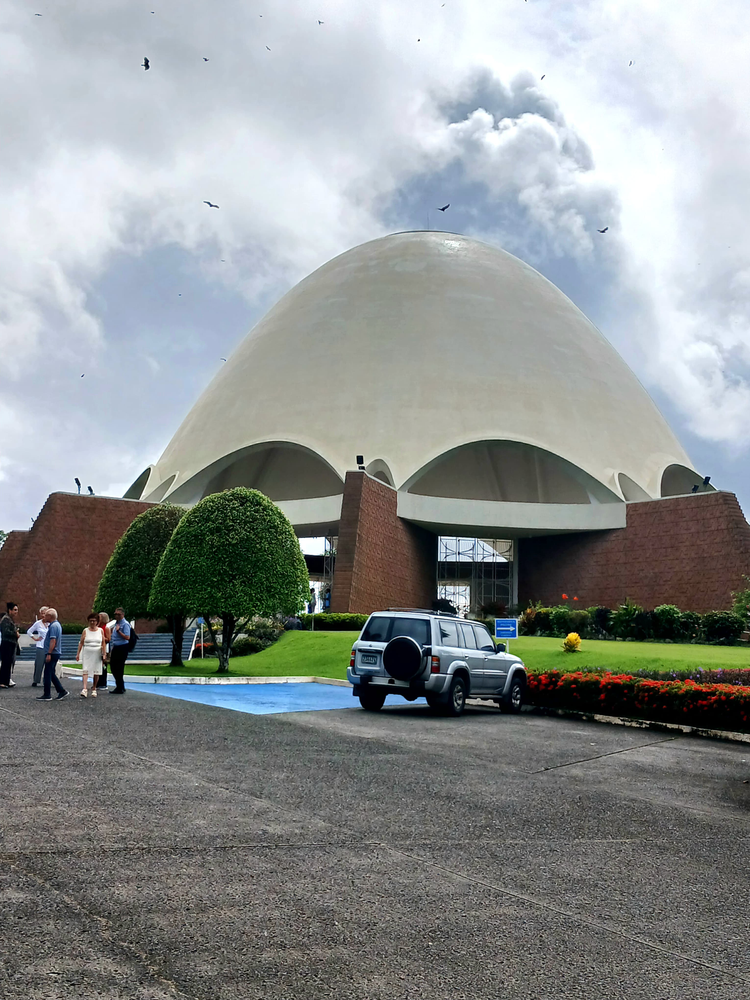
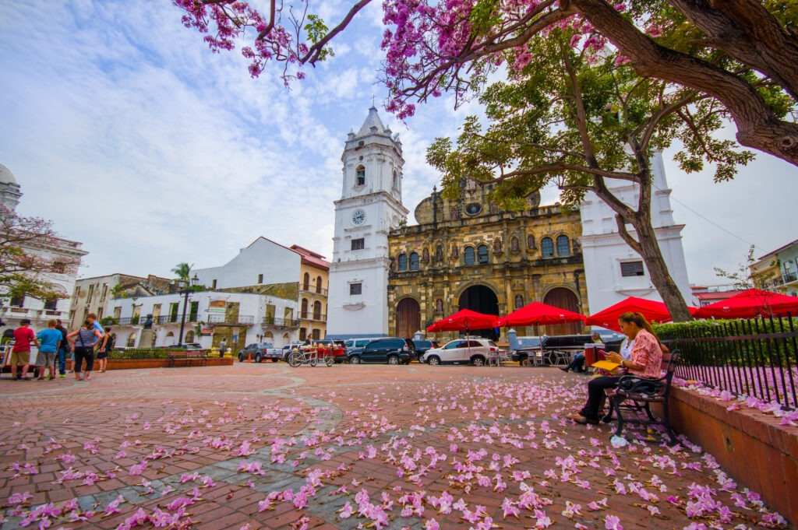

En este espacio se verán algunos de los lugares turísticos más enblemáticos de Panamá
El Parque Municipal Summit es un parque recreativo y un espacio verde enriquecido por una gran diversidad de especies de plantas y animales
El templo se inauguro en 1972. Las actividades Bahá’ís son para todo el mundo, sin importar sus creencias, su condición social, su nacionalidad o su etnia.
San Felipe, también conocido como el Casco Viejo, es el corazón de la antigua ciudad, popular por su escena gastronómica y nocturna animada
